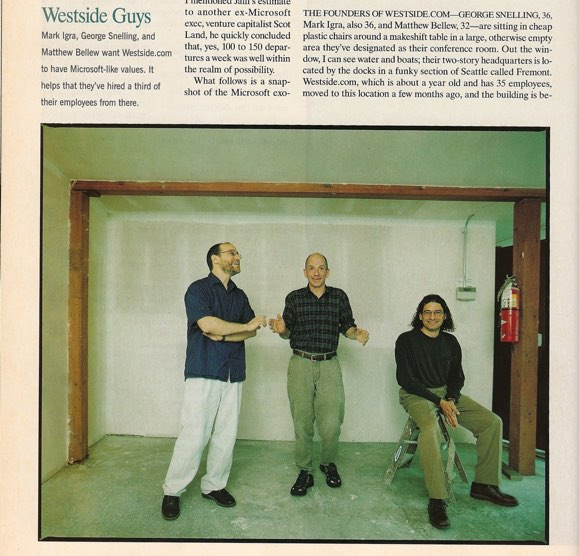
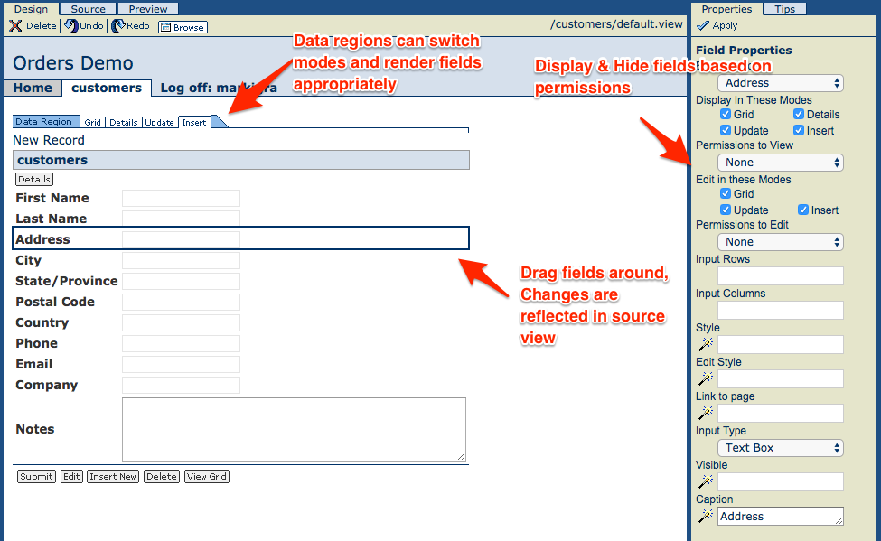
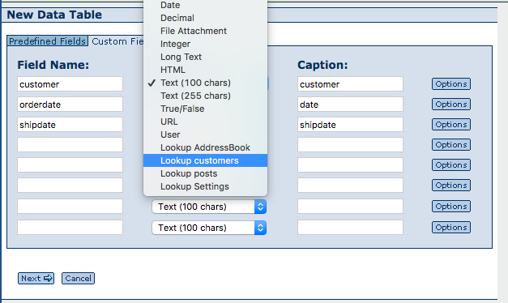
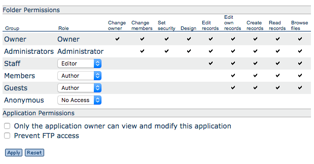
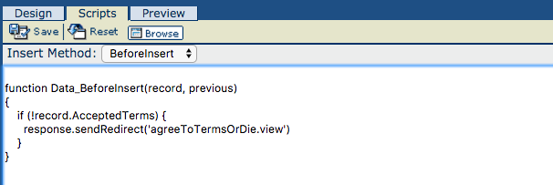

The Best Work I Ever Did
As I move out of the software & start my PhD, I wanted to do some online boasting about the best software effort I was ever involved with. From 1999 to 2001, Westside.com built a platform as a service that anticipated many of the software trends of the last 10 years. I’d still argue that there is still nothing that combines the features of Westside in such an integrated way.

They were repping our website, right?
We named the company Westside because we were all tired of commuting to Microsoft’s offices on the Eastside. We were also clueless white guys who had never heard of the gangsta rap supergroup Westside Connection . This caused some consternation when we turned on the westside.com domain and immediately got an email saying that we should give up the domain. If we did not, the sender would “come over and put a cap in your ass.” We’re pretty sure the mail was sent by some Scandanavian fanboy. In any case, our asses remained capless.
Our goal at Westside was to build a cloud-native development platform for building the kind of business apps that had been built on top of Microsoft Access, Lotus Notes and Powerbuilder in the 90s, but optimized for the web. The development environment had to run in a browser, and we were trying to do this before the cloud existed as we know it. Our team ended up having to build just about everything from scratch. Why was Westside great? It was incredibly easy to build a data-driven web app with a full relational schema, deeply integrated user model and security, and a web interface that had built in support for displaying and editing relational data on line.
It was an exciting and invigorating time. During those two years, we built a team, built out an office and built a product. Brendan and I both had our first kids. George got married. We struggled with finances, the market, and people spending too much time playing video games. But we always thought we were building a pretty exciting product.
We did build this really cool product, but none of the founders knew anything about sales and marketing. We didn’t understand how hard it was to reach our potential customers, and having reached them, convince them to trust us with their data. Without deep pockets and a trusted brand, we couldn’t reach the broad base of users we needed. George had recruited the fantastic Paul Maritz to be the chairman of our board, but even so, when the dotcom boom busted we couldn’t get the money to enlarge our customer base. Instead we sold Westside to BEA Systems, an enterprise software company that was later acquired by Oracle. Our former marketing director convinced BEA to spin off Westside and he ran an essentially unchanged version as dataweb.com for years. It still kind-of-works, but bit-rot and browser changes seem to have made it unstable since 2014 or so. Still it was good enough that LabKey used a custom Westside app for time tracking until just a few years ago.
Selling to BEA was a mistake. We chose BEA over a lowball offer from this little startup in San Francisco, run by a guy named Mark Benioff, who told George & I that he was going to think about the sale while “swimming with the dolphins in Hawaii.” Salesforce is now a leading provider of web development tools, has a $64 Billion market cap and is building a tower in San Francisco. BEA is a footnote. Oh well…
Anyway, many thanks to Adam, Brendan, Brian, Britt, Carrie, Delight, Derrick, Ed, Geoffrey, George, Heather, Jax, Jill, Jim, Joe, Joel, John, Kay, Mary, Matt, Michael, Neil, Nick, Paul, Peter, Rick, Ryan, Scott, Tamra, Tim, Tom and several people I know I missed in this list. We did great work together.
Inside Westside (for geeks only)
For the irrideemably nerdy folks, here’s a little overview of Westside.com. Remember, this was all written 16 or 17 years ago, when the best web browser on the planet was Internet Explorer 5, and Firefox 1.0 was still a few years in the future.
Westside had a React-like view engine, with web components, a drag-n-drop graphical designer, 2-way editing and autocomplete, mostly built by the brilliant Nick Shulman.

View code looked something like this. As with React, components were declared with XML and had custom properties. As with react, custom properties could be assigned with embedded code, as with #User.name# in the filter clause below.
<ws:dataregion defaultmode="grid" newrecordposition="bottom" >
<ws:datasource filter="OwnedBy=#User.name#" src="Customers" />
<ws:caption>Customers</ws:caption>
<ws:fieldbox>
<ws:field name="FirstName">
<ws:caption>First Name</ws:caption>
</ws:field>
...
</ws:fieldbox>
<ws:actionbar class="ws-actionbar">
<ws:action displaytype="image" displaymodes="insert,update" type="submit" />
<ws:action displaytype="image" displaymodes="details" type="showupdatepage" displayrole="author" />
...
</ws:actionbar>
</ws:dataregion>The web-based code editor supported auto-complete for properties, built-in objects and table fields.
It was easy to create tables, including tables with “lookups”, which are just foreign keys.

The view designer could use lookups to join in related data without writing SQL. The user picked fields from a list and the data layer would automatically generate SQL joins when you used field names like ‘customer:Address’. You could also nest data regions, so you could, for example, show Orders under a Customer record and Items under each order, all without writing any code.
Security was deeply embedded through the system, with automatic support for user management, groups and even row-level permissions. View components could selectively render based on user permissions.

The SQL layer, led by Matt, supported all the security, grouping, including shortcuts to join grouped data with other tables. It also did caching transparently for developers. The backend database was SQL Server, but that was not visible to the end user.
The Javascript engine (which John Burroughs had to build because there wasn’t an open source one) supported HTML embedded in Javascript and vice-versa. You could also use Javascript to write database triggers

and drop-dead simple web services.
webcall function hello(name) {
return "Hello " + name;
}By default, all code ran with the permissions (including data access) or the user making a request. If a function needed to do something that the calling user couldn’t do, a developer could get it to run under a higher permission level using another annotation.
asAdmin function doDangerousThing(value1, value2) {
Table.insert("SecretTable", {field1:value1, field2:value2})
}A rich server-side object model included the standard request/response infrastructure plus access to the data layer, user information and server-side http-client for tying web services together.
Developers could build and share modules that exposed new web components that were fully supported in the designer. One of the coolest things was the modules could also include a full data model, so you could just drop in something like a fully working blog.
Westside included full text search over relational tables using search engine code licensed from AltaVista, and a cool configuration UI built by Tamra Myers.
Peter made sure that Westside webs could be deployed and redeployed with a packaging technology that allowed you to move data & code back and forth betweeen production and development versions. You could also just download the whole web (including data) as a zip file, or export all the tables to an Access database.
Because there was no good web-testing system, I prototyped a cross-frame system, which Brendan blew up into a full-fledged selenium-like test framework supported by the server infrastructure.
Brian, with Joe & Ryan’s help, made all this run on servers that he personally installed in a cage at a data center. I think he also had to move them when the data center company went bankrupt.
I would be very happy if someone built a version of Westside using all the modern web technologies. There are so many off-the-shelf components from Node, React and web-based code editors to full text engines like ElasticSearch, that it shouldn’t be too terribly challenging to build a facsimile. Getting the designer, data and security models right is the tricky bit, but I’m sure it can be done. If you decide to do it, let me know; I’ll happily become a customer.